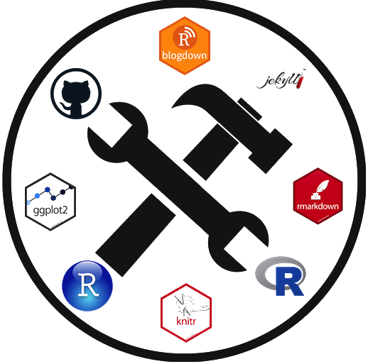

These short sessions (45min to 1hr) will be focused on R, RStudio and GitHub tools and practices for NOAA scientists to help you be faster, more efficient and organized in your data science projects. The focus of these workshops is practical skills and tools; they are intended to get you applying the skill immediately in your own work. I will give you links to my and other NOAA GitHub repositories that illustrate more complex examples (that you can copy and build on).
Target audience: Weeks 1-4: You have heard of GitHub or use it some, but want to learn how to use it better. This year, I also have two sessions on Agile project management and Scrum using GitHub issues and project boards. Weeks 5-8: You already code in R, maybe use RStudio too, but want to learn some tips about being more efficient from a seasoned R programmer who does the kind of coding and work that you do.
About me: I am a modeler/applied mathematician and I am immersed in R. I develop R packages for public use. I teach time-series analysis at the University of Washington (using R) and I teach workshops on R and reproducible research and am heavily involved in efforts to support transition to Open Science workflows within NOAA Fisheries.
For weeks 1-4, you’ll need a GitHub account and GitHub Desktop installed. For weeks 5-6, you’ll want R and RStudio installed on your computer or you can use RStudio Cloud. If you do the latter, you don’t need to install any software.
Please email Eli (eli.holmes@noaa.gov) from your NOAA email, and I will send you the WebEx links.
May 20 Introduction to Git/GitHub I will introduce you to Git and GitHub for tracking your work. In this session, you will learn the 3 basic Git skills that are all you need to get started (and for many scientists are all they need). I worked for years with just these 3 skills. Skill 1: Clone one of your GitHub repos onto your computer, Skill 2: Commit local changes, and Skill 3: Push/Pull changes to/from GitHub. I’ll discuss how to deal with merge conflicts, which often cause beginners a lot of heartburn.
May 27 More GitHub skills: issues, project boards, and releases This week, you’ll learn all about issues, project boards and releases in GitHub. These features are key to helping you organize your work and keep track of what needs to be done. These features also allow a team to collaborate effectively together on a repository.
June 3 Introduction to Agile project management Now that you have learned about Git and GitHub project tracking features, we will learn the basics of Agile project management. This will give you a proven and flexible framework for organizing a team’s work and communication on GitHub. Agile project management focuses how to structure team communication and workflow to facilitate peer collaboration and help, get quick feedback from end-users, allow responsiveness to change, and focus on the key tasks.
June 10 Intro to Scrum using GitHub issues and project boards This week will focus on the most popular Agile methodology: Scrum. Although Scrum is associated with software development, it is used in many different fields. Scrum is a lightweight and flexible framework that helps teams to work together better and learn with each cycle of work. It has 3 roles, 5 events (steps) that the team goes through during a time-boxed period of work. I will show you how to set up and run a Scrum Sprint in GitHub. The real power of Scrum comes with teams by promoting high functioning teamwork, but you can use Scrum solo; you’ll just have to ‘switch hats’ when you take on different roles.
July 1 Creating R packages for code or data This week I will show you how to make an R package. RStudio makes this incredibly easy; literally 2-3 clicks. R packages are not just for work that you share with others. Most of my code projects are organized into an R package and definitely any project that I have that involves data and code is organized into an R package. The package framework helps you write robust and well documented code. It also makes it easy to bundle data with code. By the end of this session, you will be able to build your own mini R package.
July 8 Documentation for R packages using Roxygen and pkgdown Being able to easily include good and accessible documentation of functions and data is one of the big advantages of packaging your R products. Gone are the days when you need to write documentation after the fact. Nowadays, we include documentation in headers to our functions (or object definitions) and that gets automatically assembled into documentation (help files, manuals, etc). In R, Roxygen is the way this is done and RStudio makes it super easy. Once your package is documented with Roxygen, creating a website is simple with pkgdown.
July 15 R Markdown for reports: integrating text and data tables There are many online tutorials for R Markdown which will cover the basics. I will focus on R Markdown for fisheries (or other) reports. When the data change (which happens often), we have to remake tables (and graphs) and update the numbers in text. For big reports, this is time-consuming and creates errors. I’ll show you how to use R Markdown to automate this process, so you are not manually remaking reports. In the last 1/3, I’ll give a tour of a variety of fisheries reports using R Markdown for inspiration; along with their GitHub repositories.
July 22 Writing tests for R packages and other code Writing tests and automating quality control for your R packages and code: we know we should do it, but for most of us, it is the last thing we do or want to do. In this session, I’ll get you started writing unit tests using the testthat package (the standard). I’ll also give examples of the other types of common tests and some ideas of how to automate these tests with GitHub Actions. The goal is to give you some easy coding habits that will help you incorporate tests without too much extra work.
NWFSC Math Bio Program, NOAA Fisheries